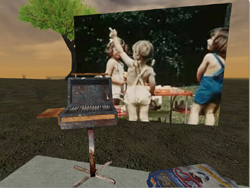
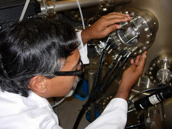
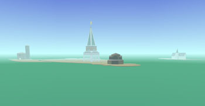

|
 The ZeroOne San Jose Festival will transform San Jose into the North American epicenter for the intersection of art and digital culture by showcasing the world's most innovative contemporary artists. ZeroOne San Jose is artists making art and using technology as a tool to do so. It is not technology for technology's sake. ZeroOne San Jose is a multi-dimensional, startling and brilliant audience event - with exhibits, live cinema, performances, workshops, and youth activities. All are one-of-a-kind, many never-before, only-here experiences. Here are some details about what you will find at ZeroOne San Jose: A Global Festival of Art on the Edge.
Exhibitions In August 2006, ZeroOne San Jose will present several major exhibitions. The main exhibition hall will consist of works that have been juried in a number of different themes: Transvergence, Pacific Rim, Community Domain, Edgy Products, and Local Artists. In addition, a number of Interactive City projects, while sited primarily in the environs of San Jose, have a "base" component in the main exhibition. When you enter the main exhibition hall you can expect to find yourself in another world. Investigating the hall, you might be captivated by beauty, challenged by provocative ideas, or fascinated with the complexity of the art. This is both a chance to observe and a chance to participate. If you want to wander, wonder, and look this is the place for you. If you are the type who loves to push the buttons, touch the canvas, ask the artist what they were thinking, this is the place for you. Whatever your idea of the thrilling art experience is, it can happen for you here. So come explore, hang out at our media-lounge, play interactive games. Look, touch, feel - it's here for you - you've got to experience it. 
 In 1881, San Jose was the first electrified city west of the Rockies. More than 120 years later, ZeroOne San Jose: A Global Festival of Art on the Edge and ISEA2006 Symposium will be the opportunity for San Jose to lead in the implementation of wireless, location-based, and pervasive computing technologies to create a truly world-class interactive city experience. At the core of what will make this festival different from any other is the ability for the viewer to become a participant. From the airport to the light rail system, from the freeways to the city skyline, from Cesar Chavez Plaza to Guadalupe River Park and Gardens, from downtown to neighborhoods, the site of the Festival will be the entire city.  San Jose itself will be an interface to dozens of interactive projects from community storytelling to virtual sculptures, from urban-scale gaming for thousands of participants to low-tech street performances, from shop front interactive installations to spectacular son et lumiere shows on building facades. In addition to juried work selected and mounted for the festival, over the last two years leading up to August 2006, some artists were commissioned to work with various San Jose communities combining technologies such as GPS and mobile communications to map their experiences and to tell their stories. These experiences and stories will become part of the fabric of the Festival. In this way, it becomes not only a glimpse of innovative art, it is a celebration of the diversity found in San Jose and a platform for community members to participate. San Jose itself will be an interface to dozens of interactive projects from community storytelling to virtual sculptures, from urban-scale gaming for thousands of participants to low-tech street performances, from shop front interactive installations to spectacular son et lumiere shows on building facades. In addition to juried work selected and mounted for the festival, over the last two years leading up to August 2006, some artists were commissioned to work with various San Jose communities combining technologies such as GPS and mobile communications to map their experiences and to tell their stories. These experiences and stories will become part of the fabric of the Festival. In this way, it becomes not only a glimpse of innovative art, it is a celebration of the diversity found in San Jose and a platform for community members to participate. Education Programs Overview ZeroOne San Jose Festival Education programs, (made possible by Adobe Systems, Inc.), offer participation to over 500 K - 12 grade students, in daily community media programs, internships, public programs and workshops throughout the festival for youth and their families, with festival artists and local artist trainers and arts educators. All projects will be displayed during the festival and accessible globally, online. You can review the programs you and your family, or group of youth, and choose what you would like to participate in or seek more information about. Sign up for as many program types as you wish (UNESCO project, Community Media Programs, Student/Teacher Workshop Website Project). We look forward to keeping you and your youth group in the loop of the education components of the first ZeroOne San Jose Global Festival of Art on the Edge! Click here for details about education programs. |